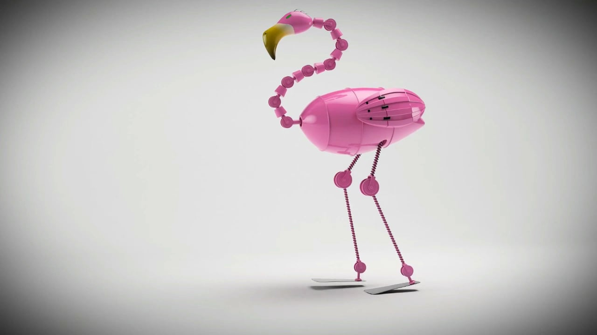

Agile and majestic, yet sturdy and fierce, the flamingos are the obvious choice for robotic advancement. Research into this field would not only provide significant fortune for flamingos,
but power for all of humanity as well. Paired with our pink-feathered, mechanically armored robo-flamingos, no power on Earth would be able to halt this unstoppable force.